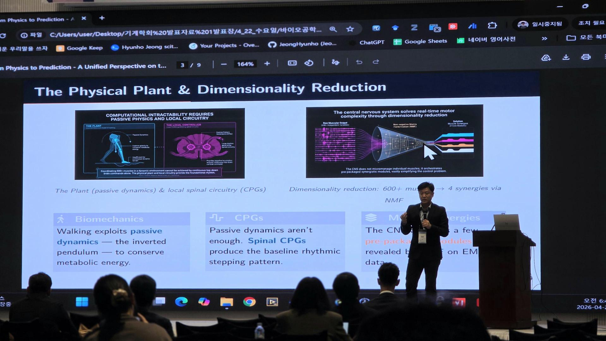
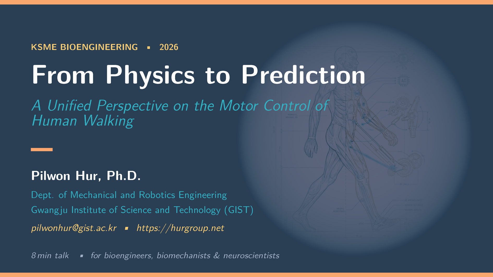
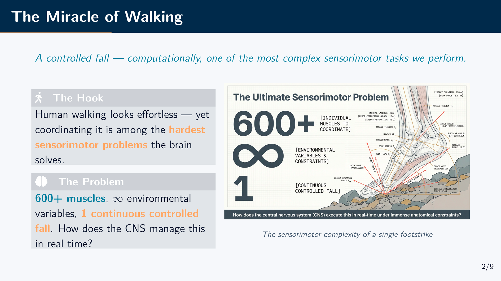
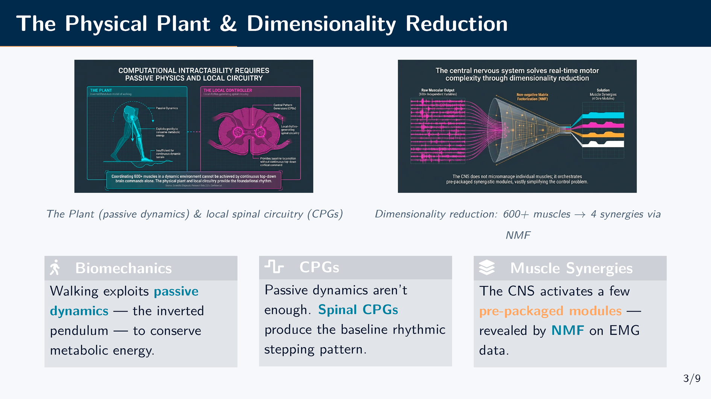
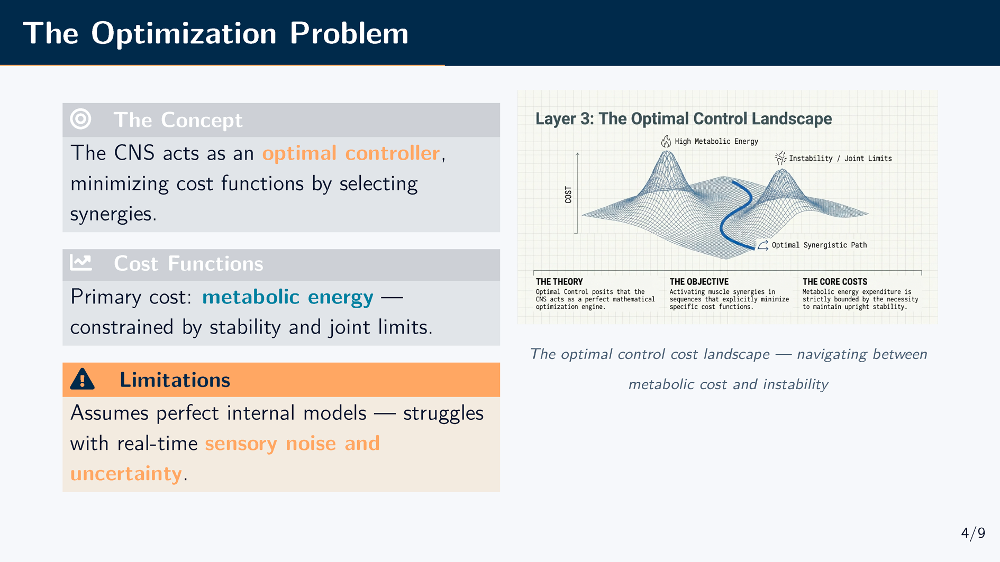
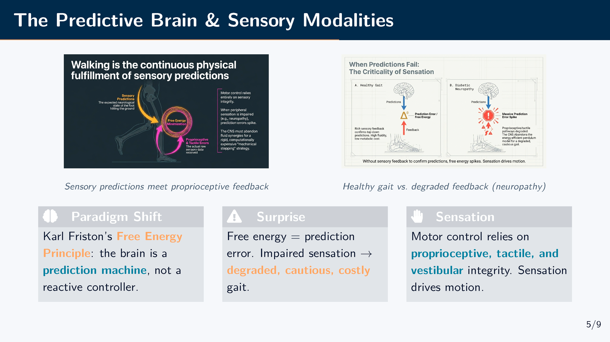
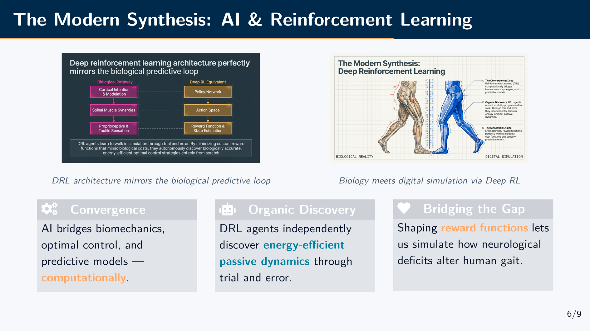
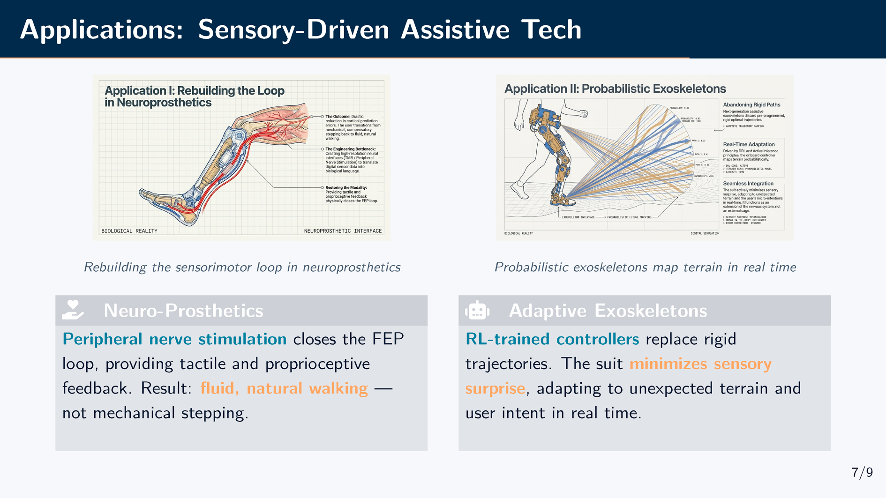
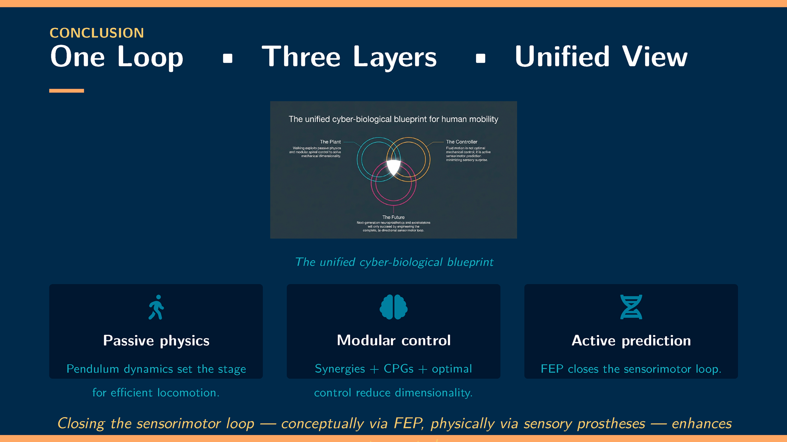
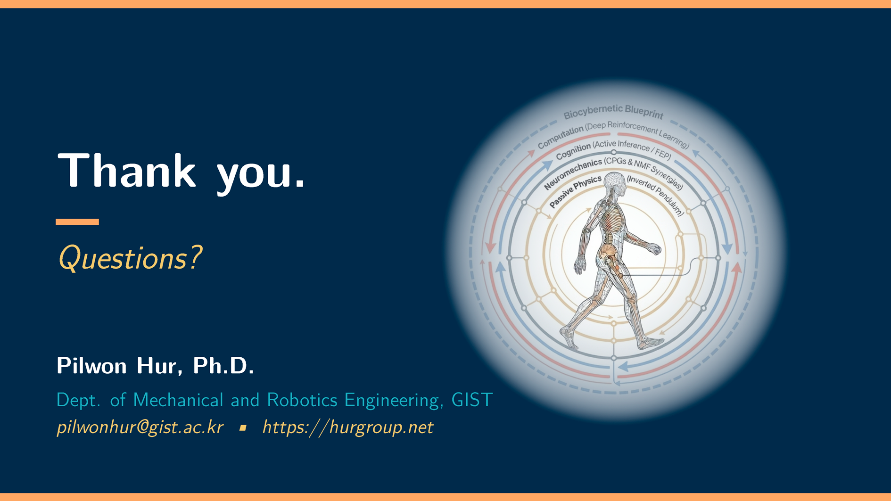

2026 대한기계학회 바이오공학부문 춘계학술대회 초청강연: From Physics to Prediction — 인간 보행의 운동제어에 대한 통합적 관점
작성자: 허필원
지난 4월 22일, 여수 베네치아 호텔에서 열린 2026 대한기계학회 바이오공학부문 춘계학술대회의 한일공동세션(Korea-Japan Joint Session)에서 허필원 교수님이 "From Physics to Prediction: A Unified Perspective on the Motor Control of Human Walking"이라는 제목으로 초청강연을 하셨습니다. 약 15분간 진행된 이 짧은 강연에서는 인간 보행의 물리학적 기반부터 인공지능을 활용한 최신 예측 모델까지, 보행 모터 컨트롤에 대한 폭넓은 시각을 담았습니다.




인간 보행, 왜 특별한가?
강연은 "보행은 통제된 낙하의 연속"이라는 인상적인 한 마디로 시작되었습니다. 인간은 매일 아무 생각 없이 걷지만, 사실 보행은 중추신경계가 풀어야 하는 가장 복잡한 감각운동(sensorimotor) 문제 중 하나입니다. 600개 이상의 근육, 무한에 가까운 환경 변수, 그리고 매 걸음마다 반복되는 전방 낙하와 회복 — 이 모든 것이 실시간으로 조율되어야 합니다.

물리적 기반과 차원 축소: 역진자 모델에서 근육 시너지까지
강연의 첫 번째 핵심은 Passive Dynamics이었습니다. 보행 중 인간의 다리는 Inverted Pendulum처럼 작동하며, 중력과 운동량만으로도 상당 부분의 에너지를 절약할 수 있다는 점이 소개되었습니다.
하지만 Passive Dynamics 만으로는 안정적인 보행이 불가능합니다. 여기서 Central Pattern Generator (CPG) 의 역할이 강조되었습니다.
가장 흥미로웠던 부분은 Muscle Synergies 개념이었습니다. 600개 이상의 근육을 개별적으로 제어하는 대신, 중추신경계는 근육들을 소수의 모듈로 묶어 활성화합니다. 비음수 행렬 분해 (Non-negative Matrix Factorization, NMF)를 이용한 EMG 분석 결과, 단 4~5개의 시너지만으로 보행 근육 활동의 대부분을 설명할 수 있다는 것이죠. 이는 우리 연구실에서도 활발하게 연구하고 있는 주제이기도 합니다.

최적 제어와 그 한계
"왜 우리는 이렇게 걷는가?"라는 질문에 대해, 교수님은 최적 제어 이론(Optimal Control Theory)을 소개하셨습니다. 중추신경계는 대사 에너지 소비를 최소화하면서 안정성과 관절 제약을 만족시키는 방향으로 시너지 활성화를 결정합니다. 이 프레임워크는 선호 보행 속도, 보폭 너비, 그리고 병리적 보행의 높은 에너지 비용 등 많은 현상을 설명할 수 있습니다.
그러나 교수님은 핵심적인 한계도 짚으셨습니다: 전통적 최적 제어는 뇌가 신체와 환경에 대한 완벽한 내부 모델을 가지고 있다고 가정합니다. 현실에서 감각은 노이즈가 많고 환경은 예측 불가능합니다. 더 나은 프레임워크가 필요한 이유입니다.

예측하는 뇌: 자유 에너지 원리와 능동 추론
강연의 가장 큰 전환점은 Karl Friston의 자유 에너지 원리(Free Energy Principle)와 능동 추론(Active Inference)의 소개였습니다.
뇌는 단순히 감각 입력에 반응하는 것이 아니라, 근본적으로 예측 기계 (Inference Machine)입니다. 매 걸음마다 발목, 무릎, 발바닥에서 느낄 감각을 미리 예측하고, 예측과 현실 사이의 오차를 최소화하는 방향으로 행동합니다.
이 관점이 임상적으로 중요한 이유는 당뇨병성 말초신경병증(diabetic neuropathy) 같은 상황에서 드러납니다. 감각 피드백이 손상되면 예측 오차가 증가하고, 보행은 조심스럽고, 느리고, 대사적으로 비효율적으로 변합니다. 감각은 모터 컨트롤의 보조 입력이 아니라, 모터 컨트롤 그 자체라는 통찰이었습니다.

AI와 강화학습: 현대적 종합
강연의 후반부에서는 심층 강화학습(Deep Reinforcement Learning, DRL)이 어떻게 이 모든 이론을 검증하고 확장하는지를 보여주셨습니다.
DRL의 Actor-Critic 구조가 생물학적 예측 루프와 놀랍도록 유사하다는 점이 인상적이었습니다. 물리 시뮬레이터에서 "전진 보행 + 에너지 효율"이라는 보상만 주었을 때, DRL 에이전트는 스스로 Passive Dynamics를 발견하고, 리듬 패턴을 개발하며, 생물학적으로 유사한 보행을 학습합니다. 누구도 그렇게 걸으라고 프로그래밍하지 않았는데 말이죠.
이 수렴(convergence)은 심오한 메시지를 담고 있습니다: 수동 물리, 모듈형 제어, 예측적 최적화 — 이 원리들은 진화가 신경계를 만들든, 인공 신경망이 처음부터 학습하든 동일하게 나타난다는 것입니다.

실제 응용: 감각 기반 보조 기술
마지막으로, 이 통합적 프레임워크가 실제 공학적 응용에 어떻게 적용되는지를 소개하셨습니다.
신경 보철(Neuroprosthetics): 기존의 로봇 의족은 미리 프로그래밍된 궤적을 따라 움직였습니다. 하지만 자유 에너지 프레임워크는 감각 루프를 닫아야 한다고 말합니다. 말초 신경 자극을 통해 촉각과 고유수용감각 피드백을 제공하면, 환자는 의족이 자기 몸의 일부라고 느끼게 되고, 보행은 기계적 걸음이 아닌 자연스러운 보행이 됩니다.
적응형 외골격(Adaptive Exoskeletons): 강화학습 기반의 컨트롤러는 고정된 궤적 추종을 확률적 정책으로 대체합니다. 외골격이 정해진 경로를 따르는 것이 아니라, 예측하지 못한 지형과 사용자의 변화하는 의도에 실시간으로 적응합니다.
이 주제 역시 우리 연구실의 핵심 연구 분야인 보행 재활 외골격 로봇과 밀접하게 연결되어 있어, 더욱 의미 있는 강연이었습니다.

강연을 마치며
교수님은 강연의 결론에서 인간 보행의 모터 컨트롤을 세 개의 층(layer)이 하나의 루프로 작동하는 문제로 정리하셨습니다:
Passive Physics — 역진자 모델이 에너지 효율적 보행의 기반을 설정
Modular Neural Control — 시너지, CPG, 최적 제어가 차원 축소 문제를 해결
Active Prediction — 자유 에너지 원리가 감각운동 루프를 닫으며, 보행을 감각 기대의 지속적 충족으로 전환
핵심 메시지: 개념적으로든(FEP를 통해), 물리적으로든(감각 보철을 통해), 감각운동 루프를 닫는 것이 인간 보행을 이해하고, 회복하고, 향상시키는 핵심이라는 것이었습니다.


한일공동세션에서의 이 강연은 생체역학, 신경과학, 그리고 인공지능이 만나는 접점에서 우리 연구실이 추구하는 연구 방향을 잘 보여준 시간이었습니다. 앞으로도 이러한 통합적 관점을 바탕으로 보행 재활과 보조 기술의 발전에 기여해 나가겠습니다.

Check out the YouTube video of this talk: